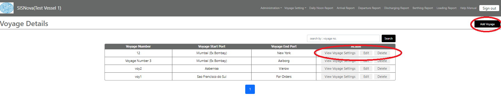
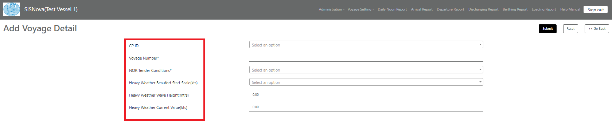
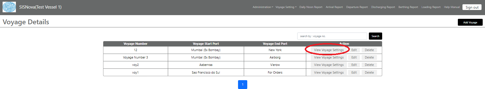
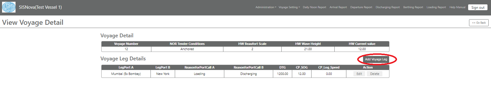
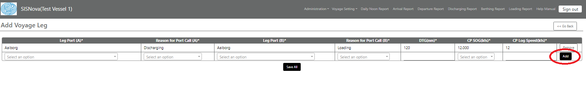
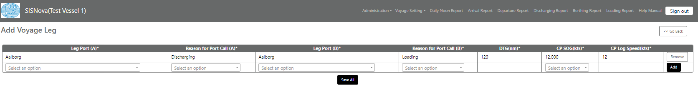
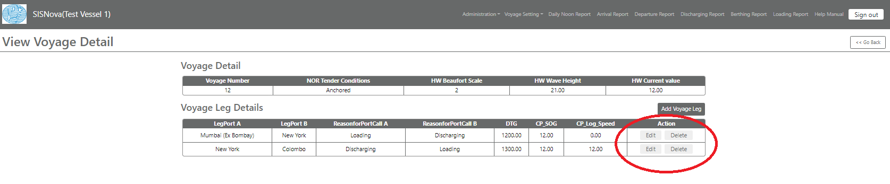

Voyage
A 'voyage' means any
movement of a ship that originates from or terminates in a port of call and that
serves the purpose of transporting cargo for commercial
purposes.
Vessel can add new voyage/view/edit/delete a particular voyage.

To add a new voyage, click on “Add Voyage” and fill the desired details. Click on Submit to save a voyage.

·
Add Voyage
Detail
a) CP ID: Charter Party ID refers to a unique number when a contract is made by which the owner of a ship lends the vessel for use in transporting cargo.
b) Voyage Number: A Voyage Number is a unique number used to identify a voyage. This is used for informational purposes. The Vessel ID identifies an actual equipment or ship that is used in the voyage schedule.
c) NOR Tender Conditions*: Insert the NOR (Notice of Readiness) location defined by the Charter Party, e.g.: NOR to be tendered at Pilot on Board (POB) or at End of Sea Passage (EOSP), or at Anchored etc. Choose the option applicable to your selected Charter Party
d) Heavy Weather Beaufort Start Scale(kts): It refers to a scale for the method of estimating wind speed based on condition of the surface of a large body of water with respect to wind waves and swell.
e) Heavy Weather Wave Height(mtrs): It refers to a well-defined and standardized statistic to denote the characteristic height of a wave (trough to crest) in a sea state, including wind sea and swell.
f) Heavy Weather Current Value(kts): It refers to a value of an ocean current which is defined as a continuous, directed movement of sea water generated by several forces acting upon the water, including wind, the Coriolis effect, breaking waves and temperature and salinity differences.
Once the Voyage is submitted, Vessel needs to add voyage leg.
Click on “View Voyage Settings” to add voyage leg for the concerned voyage.

To add a voyage leg, click on “Add Voyage Leg” and fill in the desired results.


a)
Leg
Port(A)*: It refers to the starting point for the current voyage
leg.
b)
Reason
for Port Call (A)*: It refers to the reason for arriving to the said
port.
a)
Leg Port
(B)*: It refers to the end point for the current voyage
leg.
b)
Reason
for Port Call (B)*: It refers to the reason for arriving to the said
port.
c)
DTG
(nm)*: Distance to go refers to the actual distance remaining for the next
port.
d)
CP
SOG(kts)*: Charter party Speed over ground refers to the speed defined in the
charterparty for your current voyage leg.
e)
CP Log
Speed(kts)*: Charter party Log Speed refers to the speed defined in the
charterparty for your current voyage leg. If not defined, keep it same as the
Speed over ground.

After filling in the desired details, click on “Save All” to save the data.
Here Vessel can edit/delete the voyage leg as required.
